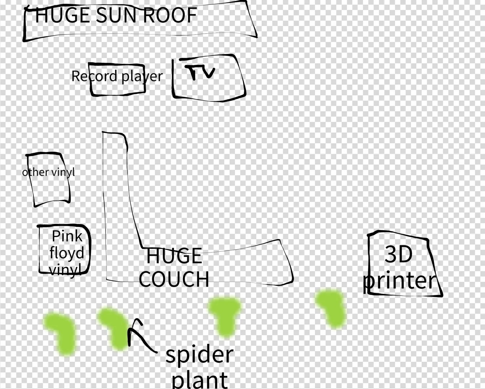
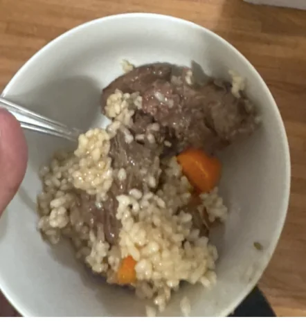
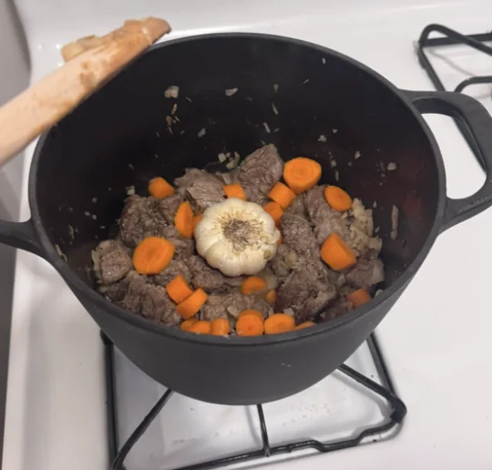
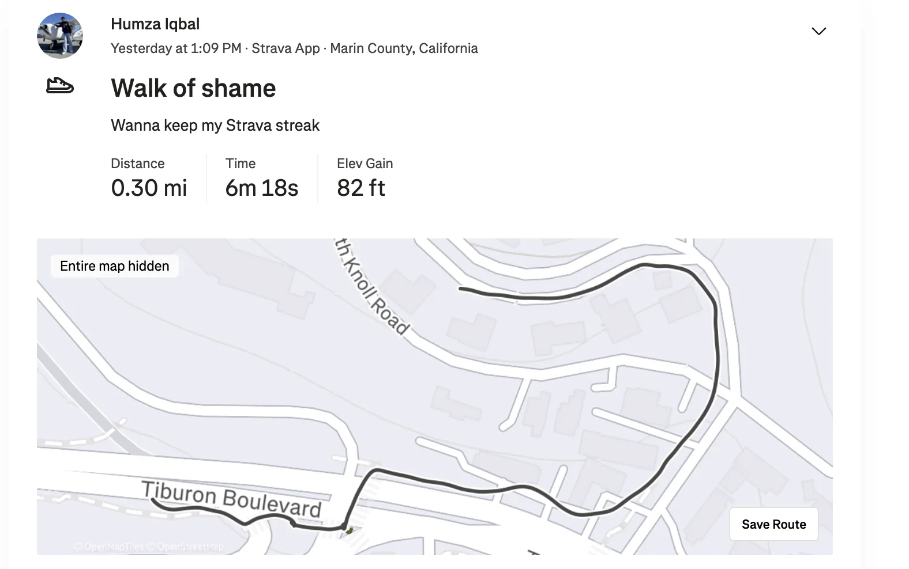

Shoutouts
Shout out to “The Notetaker” for donating his liver for public good! This is an incredibly generous act and I am in awe that you did this. Between that and all the volunteering you do (ER, tutoring, and of course trash pickup), it really shows your commitment to public good!
Monday
I was somewhat under the weather today so I skipped work and laid in bed all day. Since I had so much time I wound up binging a tv series called Daemons of the Shadow Realm which was pretty good.
Tuesday
I was feeling better but still decided to stay home from work just to give myself a day to recover some more. I continued binging and finished both the anime and manga for Daemons of the Shadow Realm. I still put in some Cursor reps as well but I did fewer of them than I would on a normal Tuesday.
In the evening when I was feeling better I got dinner with “Top of the Rope” at Abu Salim. I’m very glad that I’ve converted her to an Abu Salim stan.
Wednesday
I was back in the fight and went to the office to fully support beating slow and homogenous hardware inference with a rack of GPUs. Once I finished giving such inferior forms of inference the beating they so richly deserve I went to UCSF to see “The Notetaker” as he was getting ready to go into surgery for giving away part of his liver.
I get to the waiting room and meet up with “The Notetaker,” “The Yogi,” and “The Raja of Rhythm”. “The Yogi” had been there for 4+ hours with “The Notetaker” which was very impressive dedication. She said she wanted to stay until kicked out but had to head off and so “The Raja of Rhythm” and I took up the torch. We chatted briefly with the main surgeon who would be leading the operation. He seemed like a nice friendly older surgeon with some experience under his belt. It occurred to me after we chatted that he probably had some experience in bedside manner. I wonder how much if at all he had to train to the point where he could casually talk to people about procedures like this.
Then me, “The Raja of Rhythm,” and “The Notetaker” go up to the hospital room where “The Notetaker” would be staying for the surgery.
We watch a TV episode about the making of the Statue of Liberty and learn some interesting things. For one Gustav eiffel (of eiffel tower fame), not only built the eiffel tower but also engineered the internal structural framework for the Statue of Liberty. Also there is a process called Galvanic Corrosion where when two metals are put in contact with each other electrons will transfer between them when in presence of an electrolyte. This is applicable if moisture builds up. To prevent this they wrapped metal in asbestos insulation but the insulation wore down. During the 80s they had to repair the statue for this reason.
I also chatted with “The Notetaker” and learned he did a side project where he interviewed an old veteran who talked about his days in the Vietnam war. “The Notetaker” is exhibiting newsletter nominative determinism and transcribing these folks’ stories so they can be published alongside their records later.
Originally I planned to stay until I was kicked out by the cold unfeeling nurse assuming that was when the clock struck 8PM. At 8PM we noticed it was weird; I was still in the hospital room without a nurse trying to chase me out only to learn that visiting hours went until 10. I realized the bit was not sustainable here and went home.
Thursday
After another day in Jensen Huang’s moving castle I went to bar night with “The Mosher,” “The Philosopher,” “The Best,” “That’s nuts,” “The Bartender,” “The Finer Things,” “The Awepartment” and some others. We shook things up today and went to the east bay to see some Oakland bars.
The first was a place called Two Pitcher’s Brewing company. I thought their take on water was ok but not inspired. It lacked courage and conviction that I’ve come to appreciate in some of the better waters that I’ve had but I did find it serviceable. Fair warning though if you decide to get a burger at nearby Lovely’s DO NOT get a plain burger as it is far too dry. I made that mistake and paid the price for it. Instead be like my wise friend “The Mosher” and make sure to get chili in it instead. I don’t like my burgers the way I like “The Philosopher’s” wit.
We then went to another bar called Sandbar which did in fact have a bunch of sand on the ground along with some other decorations which really gave it a tropical aesthetic. They had connect four which I played and tied both “The Best” and “That’s nuts” at. Speaking of “The Best” I told her that if she booked an appointment she had been putting off I would give her a $2.5 Amazon giftcard. Let's see how this goes.
Unfortunately throughout the night I had a surprising onset of fear that I might never find a life partner. I’m not sure why today in particular but it did bring down my mood some throughout the night. I tried my best not to think about it and proceed with my night though.
Friday
I celebrated the holiday of Juneteenth in two big ways. The first is I don’t have to come up with some sort of clever way of saying I’m going to work.
The second and arguably bigger thing is that I went on a long six hour walk with my ex from college who I saw once last year for the first time since college. The first time was 35 weeks ago back in episode 45 for anyone that wants a refresher. The gist of it was we had a bad breakup in college in which she basically ghosted me after we had been dating for 6 months. I took it pretty bad and we didn’t talk throughout most of college. The one time we did was incredibly awkward. We caught up last year and to both of our surprises it was pretty pleasant.
Catching up again overall was quite nice. Like last time I noticed we talked quite easily and it was fun catching her up on what I had been up to and in turn hearing about her fun travel stories across the world.
I found a couple things surprising. One was that we wound up hanging out for about 6 hours which is longer than I’ve hung out 1:1 with most of my friends here. The second was that we were able to sit in silence for quite a while. We sat by Land’s End and just watched the water for as much as 20 minutes and it didn’t actually feel awkward. To be honest it’s a level of silence I rarely have with many people.
At one point we decided to get lunch at an Uzbek restaurant called Uzbegin which was quite good. I can’t leave a Yelp review obviously but it is Trash Tales recommended.
Once we’re walking for a while longer she said “Hey Humza … I wanted to apologize for any harm I may have caused you”. That made me really happy to hear. I told her both that I was super appreciative and that I had long since forgiven her. With that I felt like we could truly move on and just be friends. She mentioned she’s looking for jobs in different parts of the country and if she does end up coming to the Bay I think I’d actually be down to be friends with her properly.
Later I went to a sushi night hosted by “The Awepartment”. This is the first time I’m seeing his apartment after hearing the stories and I have to say it does live up to the name. His apartment really is quite nice

Also here were “The Philosopher,” “The Quant,” “The Mosher,” “The Finer Things,” “That’s Nuts,” “The Best,” and some of “The Awepartment’s” former coworkers.
I found out that “The Best” did indeed book the appointment she said she would book which means I now had to figure out how to give her a $2.5 Amazon giftcard. This was complicated by the fact that Amazon gift cards have a minimum of $5 so I couldn’t quite fulfill the bit. I thought about different things I could do. One option was to buy a $5 gift card, spend $2.5 on random stuff and then give her what was left of the gift card. The problem here though is that gift cards once used are tied to the account so I couldn’t give it to her. I decided on a boring solution of giving her the $5 gift card and venmo requesting her for $2.5. Of all the solutions I could have gone with it wasn’t the funniest but I suppose it got the job done.
The steak sushi was really good! Unfortunately I’m not a big fan of fish so the regular sushi tasted exactly how you would expect someone who generally doesn’t like seafood much to think it tastes. But the vibes of course were great.
Later in the night I got some more feedback on my datability which I took surprisingly hard. One thing I learned is that I tend to get pouty when I don’t get my way which isn’t very attractive (along with some examples I’m not gonna put here for identification reasons) along with the fact that I can be overly competitive and need to be the best at everything. For reasons I can’t quite explain I took this feedback (internally) much harder than some of the other feedback I had gotten. Perhaps it’s the fact that this makes me think I need to work on my personality in a way that none of the other feedback really got at. Sure my first impressions weren’t great but that wasn’t quite the same. My fashion and social cues felt less like my core personality and more just skills that I could learn. This felt like something was fundamentally wrong with me as a person. You know it's funny, typing this out 3 days later it feels much more mild but the point isn’t to say how I felt after the benefit of hindsight, it's to record how I felt at the moment which wasn’t pretty. I felt like I was truly deficient in some way. I got some more feedback which was a lot more mild but because of the headspace I was in I felt truly depressed about it in a way I hadn’t before. To be clear, the fault all lies with me for being as deficient as I am. That's not in question here.
After getting some other feedback I fell into a truly vicious spiral thinking about all the ways I’ve messed up in life, and all the feedback I’ve been getting. Even if I had improved on a lot of the things I got earlier it felt like it was all coming back to me at once. Like a sink opened up a massive torrent of shame and humiliation all throughout my body. Throughout the rest of the night I couldn’t fully enjoy the party without thinking about what a big loser I am and how I seem to be failing at life worse than nigh on anyone around me. Objectively speaking I don’t think that’s actually true but again I have to stress the point of this is to stress where my headspace was then. I thought to myself “How is everyone else so good at living life while I’m not?!”. “What did they do to not be massive failures?”. When the party ended I found myself waiting at the Powell MUNI stop for 20 minutes and during that time someone came up and asked me to sign some petition for some sort of measure. Normally in these situations I would respond either saying I was from Canada or give some sort of animated reason why I couldn’t sign the petition if I felt like messing with them a bit. Today I just said “No thanks” in a cold tone devoid of any emotion because I didn’t have anything to give. I might have spared him a glance but I don’t remember for sure.
I went home and had one of the worst sleeps I had in a while.
With the benefit of time I should have thought more about how I could concretely address the feedback but I couldn’t do so then. I still don’t really have a plan for this one. I do think it’s something I should work on but I need to think about how best to solve this.
Saturday
I woke up still feeling drained from last night. Normally I’d go to Marina run club or something but I didn’t have the energy to get out of bed. Wow, I can’t believe I of all people couldn’t get out of bed but here we are. I thought about doing something a bit different this morning and going on a hike that one of “Tightly Knit’s” friends (who I gave chicken tenders to for doing a run as part of a bit) was hosting. I went there and found I had no energy to talk to new people. I just needed a place where I could be with people and kind of just sink in a little bit and so I went to trash pickup.
On the plus side I caught up with “The Writer” for the first time in a while there and got to see some of the cool new updates to his website which were great. Also at trash pickup were “The Beekeeper” and “Granola Girlie”. When “The Beekeeper” asked how I was doing I paused for a moment and tried to say the usual “Good, how about you?” but I couldn’t get the words out. He understood at a high level pretty quickly and I appreciated his empathy. In retrospect it feels a bit selfish of me to not suppress my feelings better and just go on with the pleasantries but somehow I just couldn’t then.
After pickup I went shopping for some cooking supplies. I wanted to try cooking another dish to further level up my cooking skills and this time I went with Plov. I love Uzbek food and thought this would be a fun challenge. And after yesterday I needed some win on the board to validate my own existence. I got a new cast iron pot just for this dish. Once I was ready I invited “The Philosopher” and “The Awepartment” over and got to cooking. It was actually quite straight forward overall and I got a dish that I was actually quite happy with


Afterwards they got some “cheeky pints” at a nearby bar while I supervised to celebrate a job well done. And the fact that for unrelated reasons I will be taking stock of a chinese roomba.
Sunday
I’m feeling a lot better today and I went to trash pickup without the need to blend into the walls or debate whether to give a standard greeting when I am in fact good. There’s a bunch of people I know at trash pickup but nobody I’ve given a nickname to including a college friend of “The Yogi” who people familiar with that circle can probably guess and others well you know ah well.
After trash pickup I went home to see my family for Father’s day. On my way home I recorded a quick Strava walk to keep my 38 week streak going

We watched a bit of the world cup with Iran vs Belgium. My family is surprisingly big soccer fans and they were enthusiastically rooting for Iran (“obviously” to quote my younger sister). Apparently Belgium has some of the best strikers and Iran has really good defense so Iran did a strategy called “parking the bus” in which a team will be ultra defensive and drop most of their players on their side of the field to prevent the other team from scoring. The game wound up being a tie which apparently benefited Iran due to the group rankings.
Afterwards we went out for a meal. In my family it’s notoriously hard to pick a restaurant since many folks have strong opinions. In the end we wound up going with Uzbegin which my family loved. Afterwards I went home and wrote up most (but not all) of the newsletter.